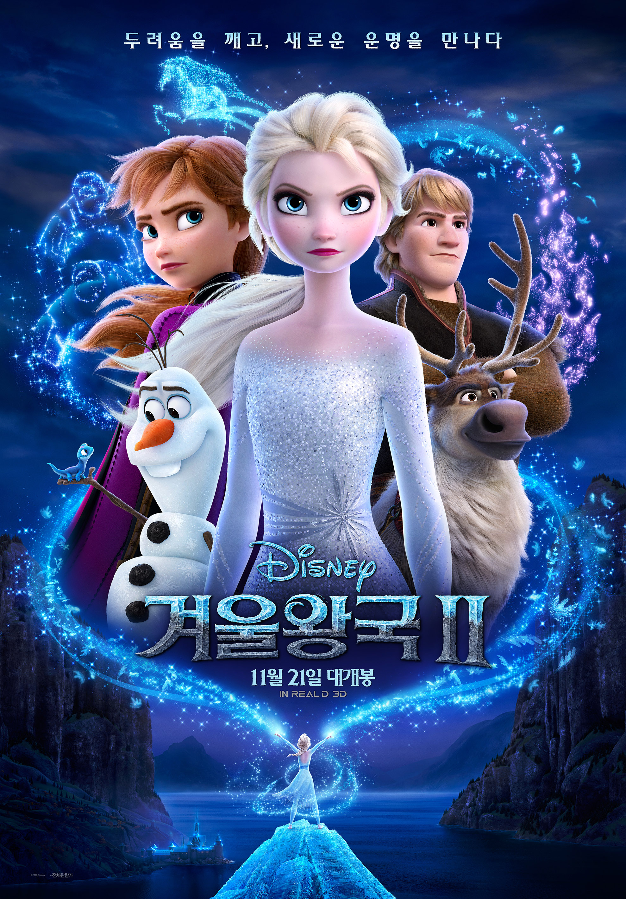

 겨울왕국 Frozen II, 2019 개봉: 2019.11.21 장르: 애니메이션/어드벤처/코미디/판타지/뮤지컬 국가: 미국 등급: 전체관람가 러닝타임: 103분 감독: 크리스 벅, 제니퍼 리 평점: 7.3점 누적관객: 13,747,792명
주요정보 내 마법의 힘은 어디서 왔을까? 나를 부르는 저 목소리는 누구지? 어느 날 부턴가 의문의 목소리가 엘사를 부르고, 평화로운 아렌델 왕국을 위협한다. 트롤은 모든 것은 과거에서 시작되었음을 알려주며 엘사의 힘의 비밀과 진실을 찾아 떠나야한다고 조언한다. 위험에 빠진 아렌델 왕국을 구해야만 하는 엘사와 안나는 숨겨진 과거의 진실을 찾아 크리스토프, 올라프 그리고 스벤과 함께 위험천만한 놀라운 모험을 떠나게 된다. 자신의 힘을 두려워했던 엘사는 이제 이 모험을 헤쳐나가기에 자신의 힘이 충분하다고 믿어야만 하는데… 11월, 두려움을 깨고 새로운 운명을 만나다!